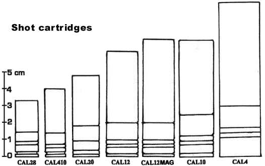

Les cartouches à plomb, autrefois appelées cartouches de chasse, sont encore de mise en 2020. Leur principe est simple : une forte charge de poudre projette dans un canon de gros diamètre à âme lisse, plusieurs projectiles de forme sphérique. Le résultat est une gerbe de plombs, de portée réduite, qui compense son manque de précision par la multiplication des projectiles et donc l'augmentation des chances de toucher la cible. Si ce concept a fait ses preuves sur les canards sauvages dans le passé, il n'en va plus du tout de la même façon face à des cibles protégées par du kevlar. C'est pourquoi les cartouches à plombs sont utlisées face à des cibles portant des armures légères. Typiquement, les cops et les gardes en sont munis. Dans les autres cas, de nombreuses munitions plus adaptées aux "grosses cibles" existent, mais ne sont généralement pas disponibles sur le marché civil.
Légalement, les armes à plombs posent un problème : leurs projectiles ne sont guère identifiables. C'est pourquoi les cartouches de gros calibre (supérieures au CAL50) ne sont pas autorisées comme arme d'auto-défense.
| Abréviation CAL28 |
Désignation Calibre 28 |
Portée 3 mètres |
C.P. 2D6+1 |
M.P. 1D6+1 |
L.P. 1D6/2+1 |
Prix des 10 $3 |

NOTES
- La portée indiquée correspond à la longue portée (L.P.). La moyenne portée (M.P.) correspond à la moitié de la longue portée, et la courte portée (C.P.) correspond au quart.
REGLE POUR LA GESTION DES DEGATS DES CARTOUCHES À PLOMBS
Pour toute cible comprise dans la gerbe de l'arme :
- Cible à bout portant ou courte portée : elle endure les dégâts maximum, dans une localisation.
-Cible à moyenne portée : elle endure les dégâts de la colonne "MP" dans 1D6/2 localisations contiguës.
-Cible à longue portée : elle endure les dégâts de la colonne "LP" dans 1D6/2 localisations contiguës.